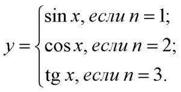

| Пример использования оператора Case Pascal. | ||
| Назад | ||
Пример использования оператора case без использования блока else.Задано число n (n = 1..3), которое есть номером функции. По значению n вычислить:
 ... case n of 1: y:=sin(x); 2: y:=cos(x); 3: y:=sin(x)/cos(x); end; ... 5. Пример использования оператора case с использованием блока else.Написать фрагмент программного кода, который по заданному номеру месяца n определяет количество дней в этом месяце. Количество дней сохраняется в переменной k. case n of 2: k:=28; 4, 6, 9, 11: k:=30; else k:=31; end; 6. Пример использования оператора case, в котором метки задаются диапазоном значений.Фрагмент кода, в котором по номеру дня n = 1..7, определяется выходной этот день (true) или рабочий (false). ... case num of 1..5: f_day_off := false; 6,7: f_day_off := true; end; ... |
||
| Конспект подготовлен Бакулиным А. М. 2022 год. | ||